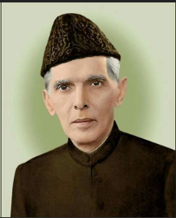

Quaid-e-Azam
25-DEC-1876 - 11-Sep-1948
Founder of Pakistan
No nation can rise to the height of glory unless your women are side by side with you..
Biographies
- Born on December 25, 1876, in Karachi (then part of India, now in Pakistan).
- Joined the Indian National Congress but later shifted to the All-India Muslim League. Advocated for the rights of Muslims in British India.
- Instrumental in negotiations with the British for the creation of Pakistan. Became Pakistan’s first Governor-General after independence in 1947.
- Revered as “Quaid-e-Azam” (the great leader) in Pakistan.
- Advocated for the rights of Muslims in British India.
- By 1940, Jinnah had come to believe that the Muslims of the subcontinent should have their own state to avoid the possible marginalised status they may might be reduced to in an independent Hindu–Muslim state. In that year, the Muslim League, led by Jinnah, passed the Lahore Resolution, demanding a separate nation for Indian Muslims. During the Second World War, the League gained strength while leaders of the Congress were imprisoned, and in the provincial elections held shortly after the war, it won most of the seats reserved for Muslims. Ultimately, the Congress and the Muslim League could not reach a power-sharing formula that would allow the entirety of British India to be united as a single state following independence, leading all parties to agree instead to the independence of a Hindu-majority India, and for a predominantly Muslim state of Pakistan.